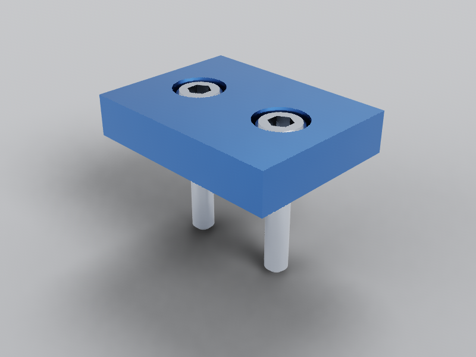
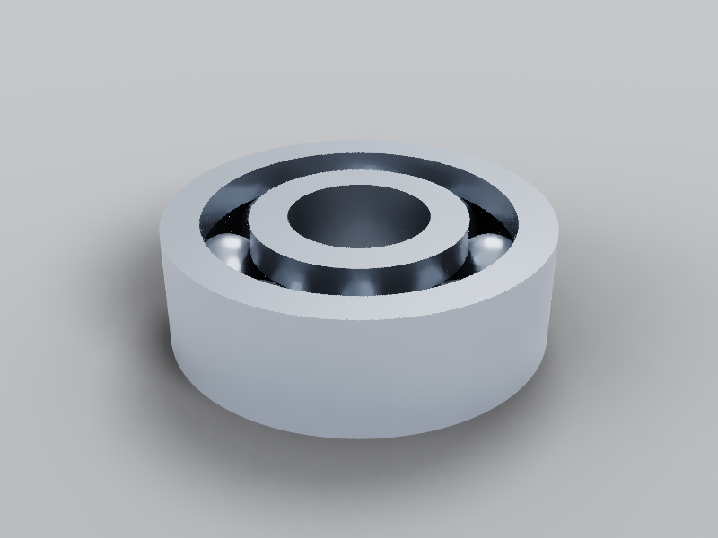
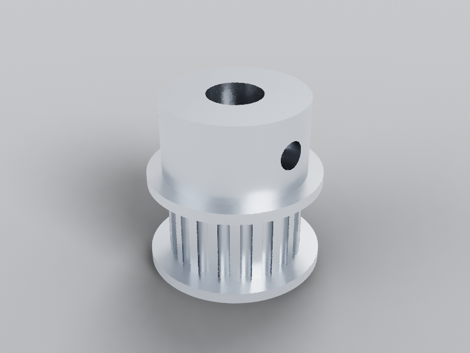
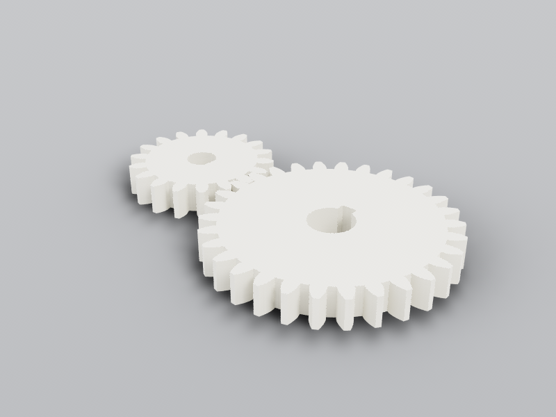
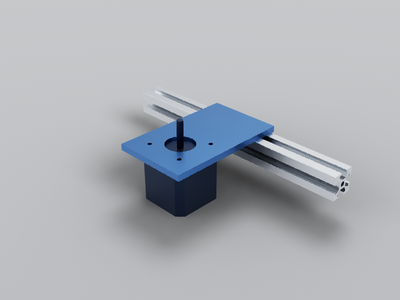

fasteners
The standard-parts library (`parts`): an M5 socket-head screw through a counterbored clearance hole in a plate, with a washer and a nyloc nut under it; a 608 bearing; a GT2 pulley; a meshing gear pair; a NEMA 17 on a T-slot rail. `cad model bom <id>` lists what to buy. Run: cad run examples/fasteners.ts





Source
Run it with cad run examples/fasteners.ts.
// The standard-parts library (`parts`): an M5 socket-head screw through a counterbored clearance hole
// in a plate, with a washer and a nyloc nut under it; a 608 bearing; a GT2 pulley; a meshing gear
// pair; a NEMA 17 on a T-slot rail. `cad model bom <id>` lists what to buy.
// Run: cad run examples/fasteners.ts
import { assembly, box, model, parts } from "@cad/sdk";
const T = 8; // plate thickness
export const bolted = model("bolted_joint", () => {
const hole = parts.clearanceHole("M5", T, { counterbore: true });
const plate = box(40, 30, T, { align: ["center", "center", "max"] })
.cut(hole.translate(-10, 0, 0), hole.translate(10, 0, 0))
.label("plate", { color: "#4a6fa5", material: "aluminum" });
const cb = parts.tables.ISO4762.M5.k + 0.4; // the counterbore's depth
const screw = parts.socketHeadScrew("M5", 25, { material: "stainless" });
const washer = parts.washer("M5", { material: "stainless" });
const nut = parts.nylocNut("M5", { material: "stainless" });
const at = (x: number) => [
screw.translate(x, 0, -cb), // head down in its counterbore
washer.translate(x, 0, -T - parts.tables.ISO7089.M5.h).label(`washer_${x < 0 ? "l" : "r"}`),
nut.rotateX(180).translate(x, 0, -T - parts.tables.ISO7089.M5.h).label(`nut_${x < 0 ? "l" : "r"}`),
];
return assembly("joint", [plate, ...at(-10).map((p, i) => (i === 0 ? p.label("screw_l") : p)), ...at(10).map((p, i) => (i === 0 ? p.label("screw_r") : p))]);
});
export const bearing608 = model("bearing_608", () => parts.bearing("608", { detail: "balls" }));
export const pulley = model("gt2_pulley", () => parts.gt2Pulley(20));
export const gearPair = model("gear_pair", () => {
const m = 2, z1 = 18, z2 = 30, w = 8;
const mesh = parts.gearMesh(m, z1, z2);
return assembly("gears", [
parts.spurGear({ module: m, teeth: z1, width: w, bore: 8, dFlat: 7.5 }).label("pinion"),
parts.spurGear({ module: m, teeth: z2, width: w, bore: 12, keyway: { width: 4, depth: 1.8 } }).label("wheel").rotateZ(mesh.turn).translate(mesh.distance, 0, 0),
]);
});
export const motorRail = model("motor_on_rail", () => {
// a plate on a rail, the motor hanging under it with its shaft up through the plate
const plate = box(60, 100, 5, { align: ["center", "min", "max"] }).translate(0, -30, 0)
.cut(parts.nemaHoles(17, 5))
.label("motor_plate", { material: "aluminum", color: "#4a6fa5" });
return assembly("drive", [
parts.tSlot2020(200).rotateY(90).translate(-100, 58, -15),
plate,
parts.nemaMotor(17, { length: 40 }).translate(0, 0, -5),
]);
});
if (import.meta.main) {
await bolted();
await bearing608();
await pulley();
await gearPair();
await motorRail();
}